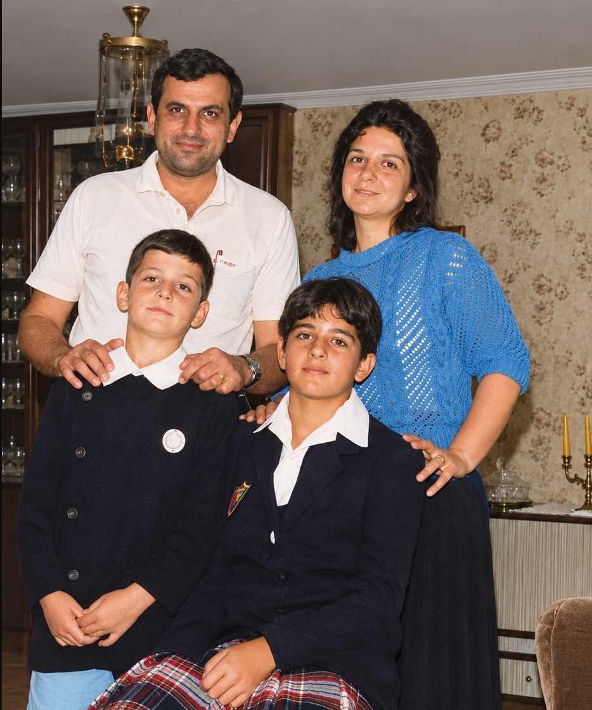
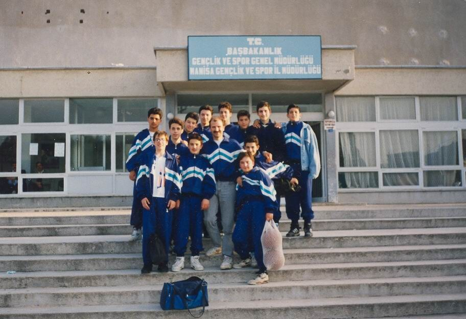
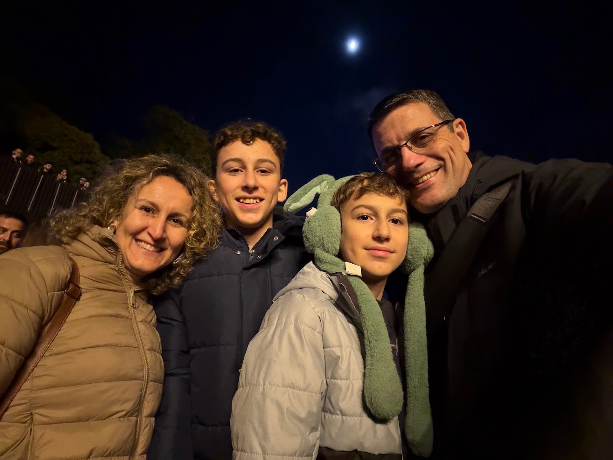

Biyografi
Lemi Orhan Ergin, kendini software crafter olarak tanımlayan bir Türk yazılımcı. İstanbul merkezli ödeme orkestrasyonu platformu Craftgate'in kurucu ortaklarından biri ve Chief Software Crafter'ı. Software Craftsmanship Turkey topluluğunun da kurucusu. 2001'den beri yazılım geliştiriyor.
Kısaca
- Memleket
- İzmir, Türkiye
- Yaşadığı yer
- İstanbul
- Eğitim
- Marmara Üniversitesi, Bilgisayar Mühendisliği lisans (2002) ve yüksek lisans (2005)
- Meslek
- Kurucu ortak ve Chief Software Crafter, Craftgate
- Tanınma nedeni
- Craftgate, Software Craftsmanship Turkey, macOS root açığı (2017)
- Aile
- Evli, sevgili bir eşi ve iki kerata oğlu var
- En sevdiği spor
- Türkiye'nin ilk sumo yorumcusu, X'teki sumo_turk hesabında sumo paylaşıyor
- Indie kahve tutkunu
- Kahvesini evde kendisi kavuruyor, öğütüyor, demliyor ve içiyor
- Tuttuğu takım
- Göztepe
İlk yıllar ve eğitim
Lemi aslen Türkiye'nin Ege kıyısındaki İzmir'den. 1990'dan 1997'ye yedi yıl İzmirspor'da amatör basketbol oynadı. İstanbul'da Marmara Üniversitesi'nde bilgisayar mühendisliği okudu; 2002'de lisansı, 2005'te yüksek lisansı bitirdi.[1] 2001 yazında ilk işine TÜSSİDE'de yazılım mühendisi olarak başladı, 2002'de de üniversitede laboratuvar asistanı olarak çalıştı.[1]




Kariyer
BYM'deki bir yılın ardından Lemi 2004'te Sony'ye katıldı ve sonraki on yılın çoğunu orada geçirdi.[1] Sony'de yazılım mühendisi olarak başladı; teknik koordinatör ve Scrum Master, principal software engineer, teknik lider, çözüm mimarı ve agile practice lead olarak çalıştı. Sony'den iki kez ayrıldı ve ikisinde de geri döndü: 2006'dan 2007'ye kadar Türk Hava Kuvvetleri'nde yazılım subayı olarak görev yaptı, 2012'de de eBay'in Türkiye'deki pazaryeri GittiGidiyor'da altı ay çalıştı.[1] 2008'de Scrum ekiplerinde çalışmaya başladı, 2009'da da James Coplien'in eğitimiyle Certified ScrumMaster oldu.[1]
2015'te danışmanlık şirketi ACM'nin yönetici ortağı oldu. İki yıl boyunca onlarca şirketteki ekiplere agile kültürü ve mühendislik pratikleri üzerine koçluk yaptı, eğitim verdi.[1] 2017'de İstanbul'daki ödeme şirketi iyzico'ya Agile Practice Lead olarak katıldı. Şirketin mühendislik ekibinde kültür dönüşümünü yönetti; dönüşümün merkezinde agile ve lean düşünce ile yazılım zanaatkârlığı vardı.[1]
Nisan 2018'de Hakan Erdoğan, Sabri Onur Tüzün ve Murathan Özcan'la birlikte Craftbase'i kurdu. Craftbase, müşterileri için fintech ve ödeme yazılımı geliştiren bir şirketti.[2] Craftgate bu şirketin içinde bir ürün olarak büyüdü. Ocak 2021'de, online satış yapan bir işletmeyi bankalarına ve ödeme sağlayıcılarına tek bir yerden bağlayan bulut tabanlı bir ödeme geçidi olarak kamuoyuna tanıtıldı.[2] 2021'de kapıda yatırımcılar da, şirketi satın almak isteyenler de vardı. Kurucular ikisinin de peşine düşmedi; bunun yerine kârlı hizmet işlerini bıraktılar. Ocak 2022'den beri şirketin tek işi Craftgate.[3] Şirket 2022'de tohum yatırım aldı,[4] 2023'te Hepsiburada ve D4 Ventures'tan,[5] 2026'da da Turkven'den yatırım aldı.[6] 2024'te İspanya'da faaliyete başladı.[7] Lemi şirketin Chief Software Crafter'ı. Hikâyenin tamamı Craftgate sayfasında.
Topluluk
Lemi 2014'te, zanaatlarını önemseyen yazılımcılar için bir topluluk olan Software Craftsmanship Turkey'yi kurdu. Topluluk bugüne kadar 200'den fazla ücretsiz meetup düzenledi.[8] 2013'ten beri, Global Day of Coderetreat de dahil, code retreat'lerde kolaylaştırıcılık yapıyor.[8] 2015'ten 2017'ye kadar Agile Turkey'nin topluluk liderlerinden biriydi; Agile Turkey bu sürede 50'den fazla ücretsiz ve herkese açık meetup düzenledi. 2015 ve 2016'da Agile Turkey Summit'in, ayrıca CraftSummit 2015'in product owner'ıydı.[8]
Agile Manifesto'yu Türkçeye çeviren ekipteydi. Software Craftsmanship Manifesto, SOA Manifesto ve Disciplined Agile Manifesto'yu da Türkçeye o çevirdi.[8] Bağlantılar Topluluk sayfasında.
Konuşmalar ve paylaşımlar
Lemi yazılım zanaatkârlığı, mühendislik kültürü, seremonisiz agile ve Git üzerine konuşuyor. Türkiye dışında çıktığı sahneler arasında Belçika, Polonya ve Ukrayna'da Devoxx, XP Days Ukraine, Sırbistan'da GrowIT, Romanya'da ITAKE, Agile Tour Kaunas, Bosnia Agile Day ve Dubai'de Agile Middle East var. Türkiye'de ise DevFest Istanbul, DevFest İzmir, Java Day Istanbul ve Devnot Developer Summit'in düzenli konuşmacılarından.[9] Şirketlerde ve üniversitelerde 200'den fazla seminer de verdi.[9] 2019'da TEDxTarsusAmericanCollege sahnesinde Türkçe bir TEDx konuşması yaptı. Konuşmanın konusu, root açığıyla tanındığı geceydi.[10]
Lemi'nin Not Defteri adlı Türkçe podcast'i sunuyor, slaytlarını Speaker Deck'te yayımlıyor. InfoQ için de yazılım geliştirmede yavaşlayarak hızlanmak üzerine yazdı.[11] Konuşmalar sayfası konuşmaları yıl yıl ve harita üzerinde listeliyor; geri kalan her şey Paylaşımlar sayfasında.
macOS root açığı
28 Kasım 2017'de Lemi, Twitter'da Apple Support'a, macOS High Sierra'da herkesin boş parolayla “root” olarak giriş yapabildiğini bilip bilmediklerini sordu.[12] Açığı kendisi bulmamıştı. Ertesi gün yazdığına göre, çalıştığı şirketin altyapı ekibi açığa denk gelmiş ve beş gün önce Apple'a bildirmişti.[12] Tweet, TechCrunch ve CNBC'den China Daily'ye ve Türk gazetelerine kadar dünyanın her yerinde haber oldu.[13] 29 Kasım'da Apple, Security Update 2017-001'i yayımladı ve Mac kullanıcılarından özür diledi.[14]
Önce Apple'a özelden haber vermesi gerektiği eleştirisine, açığı kamuya duyurmanın etiği üzerine yaptığı “Irresponsible Disclosure: Short Handbook of an Ethical Developer” (2018) konuşmasıyla cevap verdi.[15] Aynı hikâyeyi TEDx konuşmasında da anlattı.[10] Hikâyenin tamamı root açığı sayfasında.
Özel hayat
Lemi, Marmara Üniversitesi Bilgisayar Mühendisliği Bölümü'nde akademisyen olan eşi ve iki oğluyla İstanbul'da yaşıyor. Bir İzmirli olarak İzmir kulübü Göztepe'yi tutuyor.


Kaynaklar
- Kariyer, bu sitede: 2001'den beri görevler ve tarihleri, akademik dereceler ve sertifikalar
- Webrazzi, 4 Ocak 2021: Craftgate'in tanıtımı ve Craftbase'in 2018'deki kuruluşu
- Webrazzi, 1 Eylül 2021: yatırımcılar, şirketi almak isteyenler ve hizmet işlerinden çekilme
- Webrazzi, 1 Haziran 2022: tohum yatırım
- Webrazzi, 23 Ağustos 2023: Hepsiburada ve D4 Ventures
- Webrazzi, 12 Ekim 2026: Turkven
- Invest in Spain, 23 Ocak 2025: Craftgate Europe
- Topluluk, bu sitede: Software Craftsmanship Turkey, Agile Turkey, manifesto çevirileri
- Konuşmalar, bu sitede: konferanslar, seminerler ve konular
- TED: The Apple That Made Me Famous Overnight, TEDxTarsusAmericanCollege, 2019
- Paylaşımlar, bu sitede: podcast, slaytlar ve yazılar
- The Story Behind “anyone can login as root” Tweet, Medium, 29 Kasım 2017
- macOS root açığı, bu sitede: basında çıkan haberler
- MacRumors, 29 Kasım 2017: düzeltme ve Apple'ın özrü
- Irresponsible Disclosure, Women Techmakers Istanbul, 31 Mart 2018